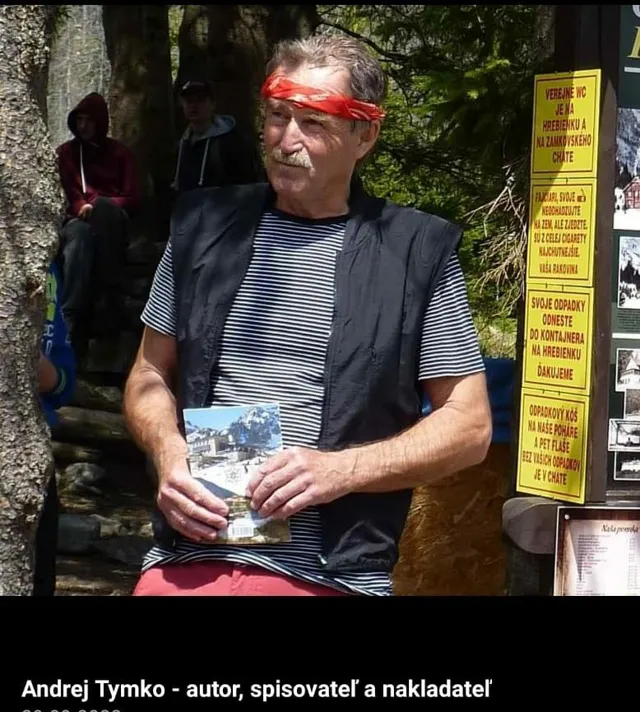

O autorze

Moje górskie ego w pigułce
W Tatrach odnalazłem siebie. Skalny świat był moim drugim domem.
Jeszcze przed trzydziestką miałem na koncie trzydzieści wejść na Gerlach. Jednego dnia nawet dwa razy – to drugie było nocne. Ostatni raz wspiąłem się na ten wspaniały szczyt w wieku sześćdziesięciu pięciu lat.
Przez ponad dwanaście lat, jako dodatkowe zajęcie, pracowałem jako tatrzański szerpa. Nosiłem na Téryówkę i na Nálepkę.
Jakaś niezwykła historia? W ciągu jednego dnia wniosłem ładunek do schroniska Téryego trzy razy. Naprawdę wyczerpujący wyczyn.
Przeżyłem wspaniałe lata w Tatrach, w Alpach i w różnych ciekawych zakątkach tej planety. Góry otworzyły mi oczy, odsłoniły prawdziwe wartości, ukształtowały mnie po swojemu i podarowały mi wiele głębokich przeżyć.
Część z nich przelałem do swojego debiutu „Tatry, nosiči a iné živly”, drugiej książki „Prachy, úskoky a podrazy” i trzeciej publikacji „Tatranskí, alpskí, himalájski nosiči a iní horali”. Moje credo? Każda egzystencja ma z góry wyznaczone swoje posłannictwo.
Kto je odkryje i wypełni, ma szansę wspiąć się aż do tego najwyższego „ja”. Szczęście? Droga do niego prowadzi przez Boże prawa i uczciwe życie. Praca jest sensem istnienia i służy zdrowiu. Dobro i miłość są silniejsze niż zło.
Póki śnisz, żyjesz.
Chcesz zmienić ten świat? Zacznij od siebie.
Źródło: profil autora w Payhip (tłumaczenie robocze ze słowackiego).